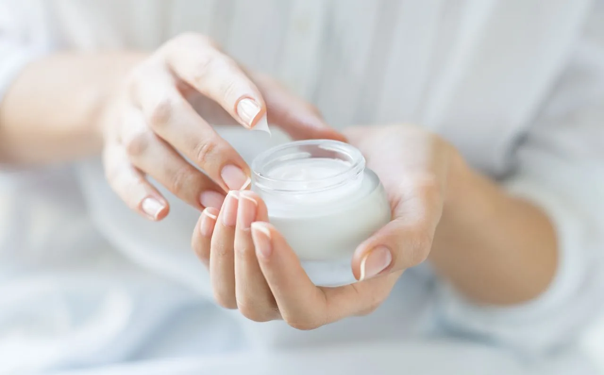

Did you finally manage to convince yourself to get that long-overdue acne treatment at your local aesthetician clinic? Great job!
How does your skin feel? Refreshed and rejuvenated, or is it raw and flaking? Well, it’s important to note that our skin may respond differently.
But there are a few do’s and don’ts to keep in mind to render the treatment effective and you can see great results sooner than you know it!
5 Important Do’s & Don’ts After Getting Your Acne Treatment At An Aesthetic Clinic
DON’TS

Popping your acne is a bad habit and should be avoided even before treatment.
- Don’t pick on your ance
If you constantly struggle with acne, you may hear this often. But you must stray away from the habit of squeezing your pimples, especially post-treatment.
Doing so can lead to scarring, infection, and further inflammation. As your skin is still raw from the extensive acne treatment, it’s crucial to avoid touching your face excessively as it can slow down the healing process or worsen the condition.
Cleansing is great but avoid harsh products that are loaded with fragrance, alcohol, and active ingredients.
- Avoid harsh or irritating skincare products
Treatments often leave your skin more sensitive and vulnerable. This is the time to switch to a basic and gentle skincare regime.
Set aside the harsh and abrasive products that are loaded with actives or granules that can further irritate your skin and opt for fragrance-free, alcohol-free, and active-free products.
Stripping your skin of natural oils with excessive cleansing is also very damaging.
- Don’t over-wash your face
While cleansing is important to prevent any dirt, oil, and bacteria build-up, over-washing can strip away your skin’s natural oils and balance.
Though ideally, we’d cleanse twice a day, it’s important to consult with your aesthetician to get the best advice post-treatment.
Excessive sun exposure can lead to further damage, especially post-treatment.
- Avoid excessive sun exposure
While it’s almost impossible to avoid the sun altogether, it’s essential to minimize your time under the sun.
In such a raw state, sun exposure can worsen your acne and cause inflammation to your skin. If you need to be out, add a layer of protection such as a sun hat, or get some sensitive skin-friendly sunscreen recommendations from your aesthetician.
Skipping your follow-up appointments won’t allow your aesthetician to effectively monitor your skin and its progress.
- Don’t skip follow-up appointments
To monitor your skin’s progress and add adjustments to your treatment plan, regular follow-up appointments with your aesthetician are a must.
With these visits, you can track your skin healing process, address any concerns or get additional guidance.
DO’S
Your qualified aesthetician will provide the necessary instruction and recommendations post-treatment to prevent any side effects and speed your skin’s recovery.
- Follow the post-treatment instructions
Like all doctors, your aesthetician will provide you with specific instructions to follow after your acne treatment.
To speed up your recovery and minimize side effects, it’s essential to follow each guideline. This may include a change in your skincare routines, product usage, or lifestyle.

A consistent skincare routine would prevent any future breakouts and optimize the treatment.
- Maintain a consistent skincare routine
If you have no basic skincare routine before, post-treatment is the best time to start and maintain it. This would ensure your skin is healthy and prevent any unwanted breakouts.
Be sure to stick to gentle cleansers, non-comedogenic moisturizers, and sunscreen with at least SPF 30.
Your aesthetician will be there to guide and recommend the best regime, products, or ingredients that fit your skin type and condition best.
Staying hydrated can serve many benefits for your body and skin.
- Staying hydrated
By now, we have all heard of the benefits of drinking water, but it’s true! Adequate water intake is good for the body’s function and skin health.
With proper hydration, your body can flush out toxins and helps your skin stay hydrated from within.
So, aim to drink the recommended intake; 8 glasses per day or a suitable amount according to your body and lifestyle.
The sun damages your skin in the deepest layer. If you need to be outdoors, wear sunscreen and additional sun protection gear.
- Protect your skin from the sun
Another common culprit to skin damage is the sun. The harmful UV rays can cause pigmentation and slow down your skin’s healing process post-treatment.
Try your best to stay indoors and apply sunscreens throughout the day, especially if you’re out and about.
Be patient with your skin’s progress and set realistic expectations. Your skin won’t heal overnight and requires follow-up treatment and consultation.
- Be patient and realistic
Acne treatment at your aesthetician clinic is not a one-time miracle. Just like healing, it takes time and care.
Be patient with your recovery and set realistic expectations; your skin might not clear as soon as possible and treatment sessions vary according to your skin responses and types.
Trust your journey and consult with your aesthetician should you have any concerns or questions regarding your treatment and skin.
Should you require additional information or advice after (or even before!) treatment, then our qualified aestheticians will be more than happy to see you!
Book your consultation with us and let’s treat any skin issues you’re facing to reveal your beauty and confidence.
References: Galderma